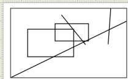

| LaTeXDraw Manual |
| System requirements |
| License |
| Features |
| LaTeXDraw 1.9 |
| Shapes |
| Graphicals Features |
| Exportation |
| Insert/import |
| Drawing properties |
| Convert Pictures |
| Template |
| Check Version |
| How to start |
Graphicals FeaturesIn this part, we are going to talk about the graphicals features of LaTeXDraw. But before that, we must explain what is a delimitor : it is a purple, green, red, ... square delimiting a selected figure, like show in the following picture :  You can move these delimitors to change the shape of the figures like explained in these following paragraphes.
Select figuresYou can select a figure by :
To unselect figures, click in an empty place in the draw panel. Move figuresTo move select figures, you must :
Rescale figuresYou can rescale a figure by dragging one of the delimitors. If you have selected several figures, you can rescale all of them by dragging the delimitors which framing all the selected shapes.Put a figure in front, behind, ... an other figure With the toolbar you can place a figure :
Rotate figures This mini-toolbar allow to rotate figures:
Join/separate several selected figuresLaTeXDraw can join several selected figures ; for that, select several figures and click on the following button in the toolbar. All these figures will be joined in order to create
only one figure.
in the toolbar. All these figures will be joined in order to create
only one figure.By the same way, you can separate joined figures using this button  . .
Change the dimensions of the drawingBy default, the dimensions of the drawing are framed by all the figures. You can display the borders of the drawing with the following button in the "Draw" menu . For example, it can be : Where the borders of the drawing is the rectangle framing all the figures. You can change the dimensions of the drawing by :
 Now, You can change the dimensions of the sketch by dragging these delimitors. In a LaTeX document a change of the dimensions of the drawing change the disposition of the document like show in the following picture : 
The mirrors
There is two mirrors: vertical an horizontal. It works with an axial symmetry by using the gravity center of the selected figure or of the group of selected figures. For the moment, when a picture, a grid or axes are transformed with this feature, their coordinates are moved but the shape is not realy changed; in a future release, an option will allow the user to do that (there is the same problem for gradient: when you apply a mirror, the gradient is not changed). The magnetic grids
This feature is very usefull when you want to place figures. To have a magnetic grid, selected the checkbox; but to display the grid you have to select it in the menu "Display"->"Grid"->"Standard grid" or "Personal grid".
|


 . After have clicked on this
button, you must click on the figure you to be in front of the selected
figures.
. After have clicked on this
button, you must click on the figure you to be in front of the selected
figures.


| Copyright(c) 2005-2006 - Arnaud BLOUIN - last changes : Septembet 11 2006 |